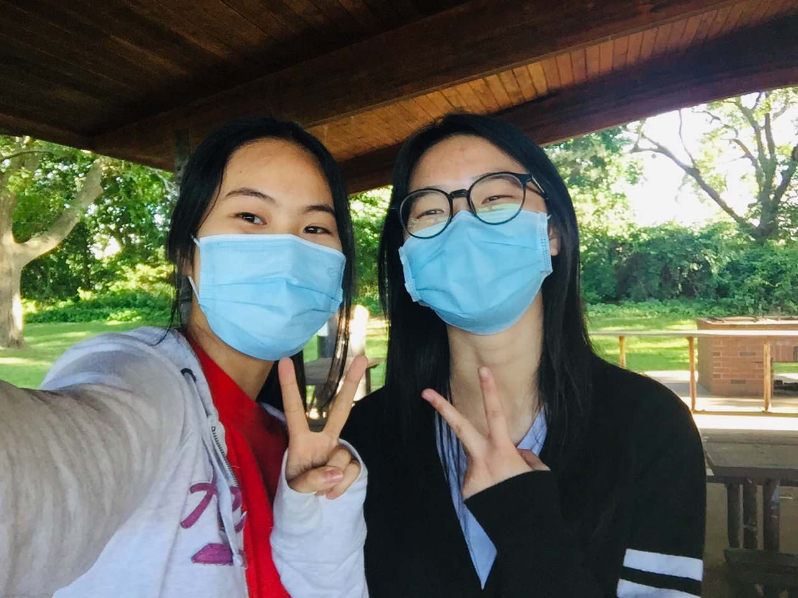

afjrotc
Welcome to my portfolio page! I am in my high school’s AFJROTC program (air force junior reserve officers’ training corps). This is a program that builds leadership skills, practices good citizenship, develops personal responsibility, and so much more. The last year has been a blast, and here are some highlights of the things that have happened!
new cadet


First-year cadets are expected to participate in New Cadet, which is a drill team for drilling new cadets, hence the name. We learn basic stationary and marching commands and compete in drill competitions. Although I was a second-year cadet (AS2), we were still presented the option and encouraged to participate since we missed out on this during the year of remote learning. These are pictures of my new cadet squad, counting the days leading up to our first competition! I am the girl with long, black, straight hair usually on the right side.
first commander’s call


A few times a year, we have a commander’s call where everyone in the corps is required to attend early in the morning. Usually, this is a time for updates, hosting in-house drill competitions between flights, discussing important issues, recognizing outstanding accomplishments, and more. On October 21st, I was recognized with the others as a newly-inducted Kitty hawk Honor Society (KHHS) member. (Sophomores are required to be in the top 10% of their class).
On October 22nd, the commander’s call featured our first in-house drill competition for the school year. Afterward, I volunteered to command a routine for the sophomore cadets (the 30-step routine). I’ve never commanded before so I was really nervous. In the picture, I am reporting to the Director of Operations (DO), one of the top 5’s of our corps.
halloween

For Halloween, each flight decides on a theme to dress up as for Halloween. For instance, one flight dressed as astronauts, one as characters from Toy Story, and one flight’s theme was Harry Potter/Hogwart students. Our flight was so indecisive, and there was always objection. It’s probably obvious that this was decided almost last minute. Our theme was frogs! I’m the girl with the sunglasses :)
mid-year commander’s call


On February 15th, there was a commander’s call for midyear awards and promotions. The first award presented was Achievement, awarded to those who have accomplished something outstanding and not easy to accomplish; for anyone who has gone above and beyond. I was one of the 16 cadets who received it! I was also promoted to a c/staff sergeant for being chosen for Below The Zone (BTZ)! I am the fourth girl from the left :)
BTZ Break-Down: One cadet from each AS level is selected to be promoted; there are four AS levels, for the number of years a cadet has been in the corps. Each squadron (there are four) selects four cadets, each of a different AS level, from their squadron (2-3 flights) after reviewing their "resume" and listening to the flight commanders’ recommendations. Every four cadets from the same AS level then prepare for an interview with the top 5 and must pass a uniform inspection.
military ball
On February 18th, our unit hosted the annual Military Ball. This is an event to bring JROTC units from across the region together to celebrate their service and have a good time. At the start of the event, MA-841st presented the colors and the POW/MIA ceremony. A dinner followed the toast. Dancing ensued! (I am the girl in the pink dress). I had tons of fun :)
peabody drill competition


On April 30, our regulation, inspection, and color guard drill teams went to the Peabody High School drill competition. I am a part of this competition's unarmed (no rifles) inspection team and the unarmed regulation team. We came home with a number of trophies!
end-of-the-year skit

At the end of the year, each flight comes up with a skit idea to perform in front of the whole corps during the commander’s call. The skit should be between 3-5 minutes long and can be a parody, an act, a dance routine, or anything. The purpose is flight bonding and esprit de corps. Our flight acted out a tai chi instructing class, with me as the instructor. In our flight picture, I am the girl with the mustache taped onto my white mask.
haverhill raider challenge competition


March 15th had marked the start of the Raider Challenge activity for this school year. Raider Challenge is a highly physical and team-oriented activity cadets from all AS-levels can compete in. There are six events: rope bridge, medical run, tug-of-war, gauntlet, 5-kilometer run, and PTT.
On May 7th, our team went to Haverhill High School for the competition early in the morning. It was freezing haha. I participated in the rope bridge, gauntlet, and the 5k run. We placed 2nd in the med-run!
peabody raider challenge competition


On June 4th, our raider team headed up to Peabody High School for the raider challenge competition. It was hard catching a break since I participated in all the events aside from the tug-of-war. We definitely made improvements compared to our last competition, such as our rope bridge time being shorter. However, there is still much to learn.
annual picnic
On June 22th, we held our annual picnic. There was a watermelon eating contest and also food available (burgers and hotdogs). We could have gone out in the sun, but coverage and shade are the best protection against skin cancer. So, my favorite upperclassmen and I just played Uno and cards for the majority of the time under the roof of the picnic area.
bataan death march


To commemorate the Bataan Death March, our corps organized a hike at Blue Hills over two days. We hiked the trail on the first day and backward the following day. In total, we hiked barely a quarter of what the prisoners of war endured (15~ miles). If you’re interested in reading more about the march, here are the links to a Britannica article and Atomic Heritage Foundation page.

The view from the mountaintop was breathtaking. The first day was gruesome, but the second day was definitely better. Maybe it was because I wore sneakers instead of boots, or maybe because it was a shorter trail…? Hiking 15 miles with people I enjoy spending time with made it fun. The trek was a blast, despite how hot and exhausting it was :)